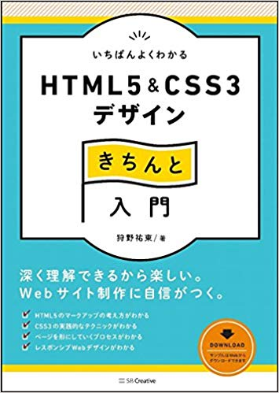
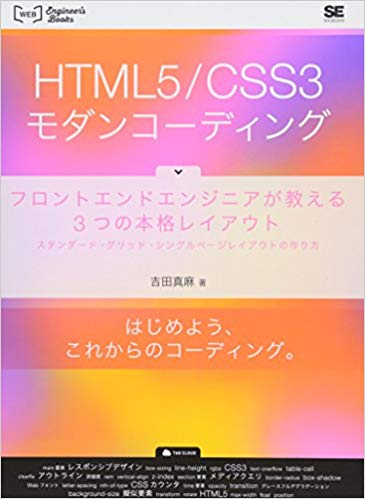
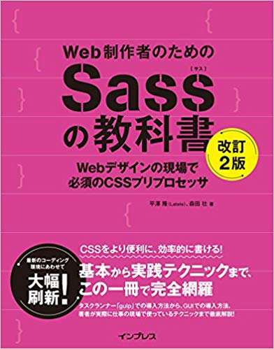

技術書

いちばんよくわかる
HTML5&CSS3デザイン
きちんと入門

HTML5/CSS3
モダンコーディング
わかばちゃんと学ぶ
Git使い方入門

Web制作者のための
Sassの教科書
(辞書として使用)
父親がインフラエンジニアだった影響もあり、小さい頃から1日中パソコンの前で過ごすことが多く、IT以外の仕事はほとんど考えたことがありません。比較的新しい業界であり、進化の早いWebの分野に興味があったので、HTMLとCSSのコーディングの勉強から始めました。デザインとマーケティングへの興味から、開発ではなく制作からキャリアをスタートすることにしました。
今興味のある、プログラミング・デザイン・マーケティングの全てに関われる職種であることから、長期的に見ればそれらを勉強する機会と活かす機会があると考えました。また、活かせるスキルが多い仕事なので自分の得意・不得意に合わせてキャリアをカスタマイズしやすく、後悔しづらい選択だと思いました。
Progateから始めて最初はあやふやだった点の知識が、実際に1からコーディングしてみることで線になって結びつく感覚や、1ページ完成させた時の達成感は忘れられません。知らないことだらけで、毎日まだまだ勉強不足だと感じさせられる環境が楽しいです。自分の作ったサイトがクライアントさんの利益になり、世の中を少しでも幸せにすることに貢献するところを見てみたいです。
名前：川口 遥
生年月日：1999年12月24日(19歳)
東京生まれ東京育ち。地元は池袋。
25歳の彼女と今年の5月1日に入籍。
全世界1700万人以上が利用している有料の才能診断｢ストレングスファインダー｣でも「学習欲」が1番高く、勉強している時に幸せを感じます。
1月末にコーディングの勉強を始めてから今日までの半年間、ほぼ毎日継続して勉強し続けました。これからも続けていきます。
学生時代は、偏差値57程度の高校で1年間クラス1位の成績を維持し続けました。
ProgateとUdemyでざっとイメージを掴み、技術書で細かい知識の習得をした後、
30DAYSトライアルで、デザインカンプからピクセルパーフェクトでコーディングする練習をしました。
Sassを使っていて、Gulpでコンパイルしています。Gitも入門書を1冊終えたところです。
いちばんよくわかる
HTML5&CSS3デザイン
きちんと入門
HTML5/CSS3
モダンコーディング
わかばちゃんと学ぶ
Git使い方入門
Web制作者のための
Sassの教科書
(辞書として使用)
就職面接で定番の質問を集めて答えました。
将来やりたいことは？
プログラミング・デザイン・マーケティングの全てに興味があるため、幅広く経験した上で制作から運用、マーケティングまで広く扱えるWebディレクターになりたいです。
強みや長所は何か？
正解のない物事の最善手を考え、選び取ることが得意です。また、既に人より出来ることでもより高みへ登ろうとし続けます。これらの特徴により、Web制作の目的である集客やセールスから、保守性の高いコードまで、正解も終わりも無い仕事に向き合い続ける自信があります。
弱点や短所は何か？
決まりきった作業や日常の繰り返しが苦痛に感じやすいことがあるため、常に「より良く」する方法を考えたり、高い目標を設定することで、マンネリ化することを防いでいます。
今までで苦労したことは？
昨年父親が脳梗塞で入院したことです。母親の相談に乗りながら、入退院の手続きや常駐先の会社とのやり取り、お金の管理を代わりにやったことで、生活保護や税金などに詳しくなり、若くして事務手続きに慣れることが出来ました。
趣味は何か？
読書とゲームです。図書館で常に本を借りていて、月に4冊ほど読んでいます。内容はほとんどがビジネス書です。ゲームは、上達のためなら1日何時間でもプレイし続けられるほどです。ひとつのゲームを極めることで手に入れた抽象化した法則は様々な分野に活かせるため、実益にもなると考えています。
最近、関心のあることは？
Web制作以外には、英語（毎日少しずつ勉強中）、プログラミング全般、ブログやアフィリエイト、AIによる時代の変化、節税や投資などに関心があります。
最後にひとこと
まだまだ勉強不足ですが、変化の早いIT業界で勉強し続ける心構えはあります。Webサイトを通じて、会社と世の中に貢献出来るように日々精進しますので、検討よろしくお願い致します。
{kind=link}